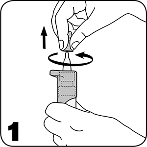
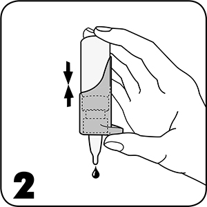
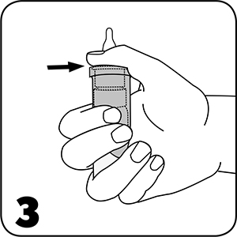
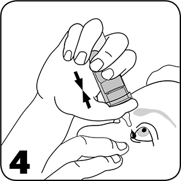

|
 |
| АРТЕЛАК® НОЧНОЙ (ARTELAC NIGHT) р-р офтальмологич. увлажняющий | ||||||
|
Номер и дата регистрации: РЗН 2020/9820 от 17.06.21 Групповая принадлежность: Медицинское изделие для увлажнения слизистой оболочки глаза |
Владелец регистрационного удостоверения: зарегистрировано Представительство: | |||||
Форма выпуска, состав и упаковка
Вспомогательные вещества: карбомер, глицерин, липидный компонент (триглицериды среднецепочечные), гидроксид натрия, вода д/и. 10 мл - флаконы (1) с дозатором - пачки картонные. | ||||||
| ||||||
Описание препарата основано на официально утвержденной инструкции по применению и утверждено компанией-производителем для издания 2022 г. | ||||||
Свойства |
Область применения |
Рекомендации по применению |
Побочное действие |
Противопоказания |
Беременность и лактация |
Особые указания |
Передозировка |
Лекарственное взаимодействие |
Условия хранения и сроки годности |
Условия реализации
Свойства
Артелак® Ночной представляет собой офтальмологический раствор, содержащий 0.24% гиалуроновой кислоты (в форме натрия гиалуроната). Передовая формула обладает очень хорошей переносимостью, поскольку не содержит консервантов и буферов. Медицинское изделие не содержит в своем составе лекарственное средство. Раствор офтальмологический представлен в доработанной инновационной многодозовой системе, не содержащей консерванты, которую просто и безопасно использовать. После вскрытия флакон с каплями можно использовать в течение 6 месяцев. Артелак® Ночной это средство для комплексного увлажнения, которое поддерживает все три слоя слезной пленки: липидную, водную и слизистую фазу с целью улучшения и поддержания увлажненности глазной поверхности при любых симптомах сухости и дискомфорта в глазах. Липидный компонент – среднецепочечные триглицериды, обладает защитным эффектом, уменьшая испарение липидного слоя в слезной пленке. Натуральный увлажнитель – гиалуроновая кислота (в форме гиалуроната натрия), которая обнаруживается в структурах глаза здорового человека и в натуральной слезной пленке в совокупности с глицерином (глицеролом) притягивает влагу, поддерживая и восстанавливая водный слой в слезной пленке. Компонент карбомер за счет своей вязкой структуры связывает молекулы воды, восстанавливает муциновый слой. Карбомер также обладает длительным увлажняющим действием. Артелак® Ночной – средство для сохранения здорового состояния поверхности глаза, распределяется на поверхности и обеспечивает интенсивное увлажнение для немедленного и длительного облегчения симптомов. Это идеальный продукт для любого потребителя, страдающего от таких симптомов сухости глаз, как усталость, раздражение, жжение и/или слезоточивость. Может применяться как в домашних условиях, так и в ЛПУ. Область применения
Для увлажнения передней поверхности глаза (роговицы и конъюнктивы):
Рекомендации по применению
Закапывают 1 каплю Артелак® Ночной в конъюнктивальный мешок глаза по мере необходимости. Можно использовать каждый день и так часто, как необходимо, в течение дня и на ночь. Ограничения по продолжительности применения отсутствуют. Способ применения Перед первым использованием флакона, а также в том случае, если флакон долго не использовали необходимо снять крышку, направить флакон вниз, многократно надавливать (до 20 раз) до момента появления капли. Теперь флакон готов к применению. Рекомендуется резко нажимать на клапан дозатора. 1. Необходимо снимать защитную крышку с наконечника перед каждым использованием.  2. Внимание! Перед первым использованием флакона, а также в том случае, если флакон долго не использовали, следует перевернуть флакон, как показано на рисунке, и нажать несколько раз до появления первой капли.  3. Следует держать флакон как указано на рисунке: положить большой палец на удобную опору для большого пальца и обхватить пальцами нижнюю часть. На дно флакона следует положить два пальца.  4. Направить флакон кончиком вниз, осторожно потянуть нижнее веко пальцем свободной руки, удерживая флакон в вертикальном положении над глазом. Слегка нажать дозатор, чтобы нанести одну каплю в глаз.  После этого следует закрыть глаза и медленно поводить глазами во все стороны, чтобы капля распределилась по поверхности глаза. Инновационный механизм насоса флакона Артелак® Ночной позволяет использовать раствор офтальмологический без консервантов. Побочное действие
Крайне редко сообщалось о местных реакциях повышенной чувствительности. Применение в таких случаях следует прекратить и обратиться к врачу. Особые указания
Следует избегать контакта наконечника флакона с пальцами или любыми другими поверхностями, чтобы избежать возможной контаминации раствора. После использования следует стряхнуть все оставшиеся после применения капли. Перед применением следует снять контактные линзы. Необходимо подождать примерно 15 мин перед использованием другого офтальмологического продукта или перед установкой контактных линз. Не использовать, если упаковка или флакон повреждены. Утилизация Артелак® Ночной, подлежащий утилизации после использования, а также в связи с истечением срока годности или в случае нарушения целостности упаковки, относится к классу опасности А. При использовании в домашних условиях допускается утилизация в контейнеры с бытовым мусором. Медицинские изделия после использования по назначению в ЛПУ классифицируются как класс опасности B. После аппаратных методов дезактивации с использованием физических методов и изменения внешнего вида отходов, что исключает возможность их повторного использования, могут накапливаться отходы класса B, временно хранящиеся, перевозимые, уничтожаемые и утилизируемые вместе с классом А. Упаковка дезактивирующих медицинских отходов класса В должна быть маркирована с указанием дезактивации медицинских отходов. Утилизация должна осуществляться аккредитованными организациями. Влияние на способность к управлению транспортными средствами и механизмами Данный продукт может вызвать временное помутнение зрения после закапывания в связи с наличием в составе компонента карбомер, что может оказать негативное влияние на управление транспортными средствами или работу с механизмами. |
||||||
Вернуться наверх |
||||||
Copyright © Справочник Видаль «Лекарственные препараты в России», Москва, Россия